3
Interrupts and Timers
Interrupts allow microcontrollers to respond to events without having to poll continually to see if anything has changed. In addition to associating interrupts with certain pins you can also use timer-generated interrupts.

Hardware Interrupts
As an example of how to use interrupts, let’s revisit digital inputs. The most common way to detect when something has happened at an input (say a switch has been pressed) is to use some code like this:
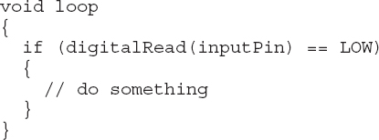
This code means we continually check inputPin and the moment it reads LOW, we do whatever is specified at the //do something comment. This process works well, but what if you have a lot of other things to do inside the loop, too? These other things take time, so you could potentially miss a very quick button press because the processor is busy doing something else. In actual fact, with a switch, missing the button press is unlikely as it remains pressed for what in microcontroller terms is a long time.
But what about shorter pulses from a sensor, which may only be active for a few millionths of a second? For these cases, you can use interrupts to receive such events, setting a function to run whenever these events happen, irrespective of whatever else the microcontroller might be doing. Thus, these are called hardware interrupts.
On the Arduino Uno, you can only use two pins as hardware interrupts, which is one reason they are used sparingly. The Leonardo has four interrupt-capable pins; bigger boards like the Mega2560 have many more; and, on the Due, you can attach all the pins to interrupts.
The following shows how hardware interrupts work. To try this example, you need some breadboard, a tactile push switch, a 1 kΩ resistor, and some jumper wires.
Figure 3-1 shows the arrangement. The resistor pulls the interrupt pin (D2) HIGH until the button on the switch is pressed, at which point D2 is grounded and goes LOW.
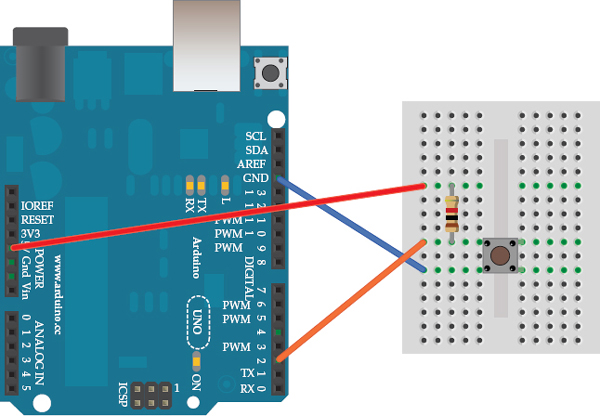
Figure 3-1 Interrupt test circuit
Load the following sketch onto your Arduino:
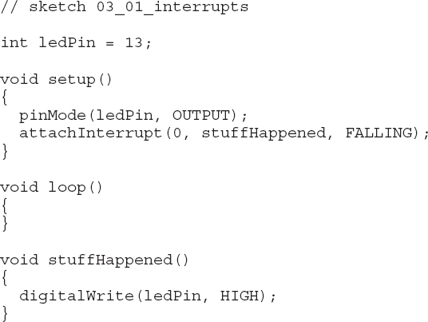
As well as setting the LED pin to be an output, the setup function also contains a line that associates a function with an interrupt. So whenever the interrupt occurs, the function is run. Let’s look at this line closely because its arguments are a little confusing:
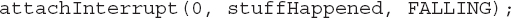
The first argument 0 is the interrupt number. It would make far more sense if this were a regular Arduino pin number, but it isn’t. On an Arduino Uno, interrupt 0 is pin D2 and interrupt 1 is D3. The situation is made even more confusing because on other types of Arduino, these pins are not the same, and on the Arduino Due, you just specify the pin name. When using an Arduino Due, all the pins can be used as interrupts.
I’ll come back to this later, but for now let’s move on to the second argument. This argument stuffhappened is the name of the function to be called when an interrupt occurs. You can see the function defined later in the sketch. Such functions have a special name; they are called Interrupt Service Routines, or ISRs for short. They cannot have any parameters and should not return anything. This makes sense: Although you can generally call them from other parts of your sketch, no line of code will have called the ISR, so there is no way for them to be given any parameters or to return a value.
The final attachInterrupt parameter is a constant, in this case, FALLING. This means the interrupt only results in the ISR being called if D2 goes from HIGH to LOW (in other words, it “falls”), which is what happens when the button is pressed: D2 goes from HIGH to LOW.
You’ll notice there is no code in the loop function. Normally, the loop function would contain code that would be executed until the interrupt occurred. The ISR itself simply turns the “L” LED on.
When you try the experiment, after the Arduino has reset, the “L” LED should go out. Then as soon as you press the button, the “L” LED should immediately light up and stay lit.
Now change the final argument of attachInterrupt to RISING and upload the modified sketch. The LED should still remain unlit after the Arduino has finished restarting because the interrupt may be HIGH, but it has always been HIGH; it hasn’t, at any point, gone LOW to then “rise” to HIGH.
When you press and hold the button, the LED should stay unlit until you release it. Releasing it triggers the interrupt because D2, which was LOW while the button was pressed, only rises to HIGH when you release it.
If this doesn’t seem to work, then the switch is probably bouncing. There isn’t a perfect jump from open to closed; rather, the switch will actually turn on and off a few times before settling into the on position. Try it several times, pressing the switch firmly, and you should be able to get a close without a bounce.
The other way to test this is to hold the switch while you press the Reset button on the Arduino. Then when you are ready, release the test button and the “L” LED will light.
Interrupt Pins
Returning to the thorny issue of how interrupts are named, Table 3-1 shows how the most common Arduino boards map interrupt numbers to physical Arduino pins.
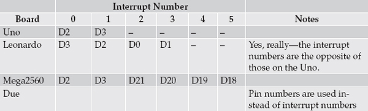
Table 3-1 Interrupt Pins of Different Arduino Boards
The pin swap for the first two interrupts on the Uno and Leonardo is an easy trap to fall into. The Due approach of using the Arduino pin name instead of the interrupt number is a much more logical way of doing things.
Interrupt Modes
The RISING and FALLING modes, which we used in the previous example, are the most handy modes. There are, however, some other interrupt modes. Table 3-2 lists these modes, along with a description.
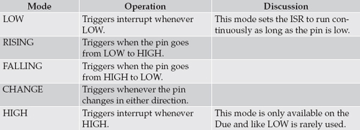
Table 3-2 Interrupt Modes
Enabling Internal Pull-Up
The hardware setup in the previous example uses a pull-up resistor. Often, the signal that causes the interrupt is from a sensor’s digital output, in which case, you do not need a pull-up resistor.
If, however, the sensor is a switch, wired in the same way as the test board shown in Figure 3-1, you can reduce the component count by a resistor if you enable the internal pull-up resistor (about 40 kΩ). To do this, you need to define the interrupt pin explicitly as being an INPUT_PULLUP type by adding the bold line, shown here, to the setup function:
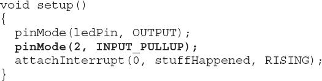
Interrupt Service Routines
Sometimes the idea of being able to interrupt what is going on in the loop function can seem like an easy way to catch keypresses and so on. But actually there are some fairly strict conditions regarding what you can reliably do within an ISR.
The first thing is that you normally need to keep an ISR as short and fast as possible. If another interrupt occurs while an ISR is running, then the ISR will not itself be interrupted; instead, the interrupt signal is ignored until the ISR has finished. This means that if, for example, you are using the ISR to measure a frequency, you could end up with an incorrect value.
Also, while the ISR is running, nothing happens with the code in the loop function until the ISR has finished.
While inside an ISR, interrupts are automatically turned off. This prevents the potential confusion caused by ISRs interrupting each other, but it has some side effects. The delay function uses timers and interrupts, so that won’t work. The same is true of millis. And although delay uses millis and it will tell you the milliseconds elapsed since reset at the point that the ISR started executing, but it will not change as the ISR runs. However, you can use delayMicroseconds because this does not use interrupts.
Serial communication also uses interrupts, so do not use Serial.print or try to read from Serial. Well, you can try, and it may work, but do not expect it to work reliably all the time.
Volatile Variables
Because the ISR function is not allowed to take parameters and cannot return a value, you need a way to pass data between the ISR and the rest of the program. You typically do this using global variables, as the next example illustrates:
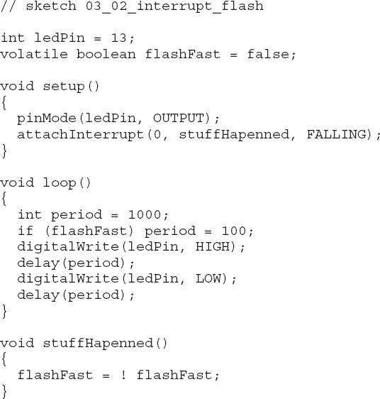
This sketch uses a global variable flashFast in the loop function to determine the delay period. The ISR then toggles this same variable between true and false.
Notice that the declaration of the variable flashFast includes the word “volatile.” You may get away with the sketch working if you do not use volatile, but you should use it because if a variable is not declared as being volatile, the C compiler may generate machine code that caches its value in a register to improve performance. If, as is the case here, this caching process could be interrupted, then the variable might not be updated correctly.
ISR Summary
Keep these points in mind when writing an ISR:
• Keep it fast.
• Pass data between the ISR and the rest of the program using volatile variables.
• Don’t use delay, but you can use delayMicroseconds.
• Don’t expect serial communications, reading, or writing to be reliable.
• Don’t expect the value returned by millis to change.
Enabling and Disabling Interrupts
By default, interrupts are enabled in a sketch and, as I mentioned previously, are automatically disabled when you are inside an ISR. However, you can explicitly turn interrupts on and off from your program code using the functions interrupts and noInterrupts. Neither function takes any parameters and they turn all interrupts on or off, respectively.
You might want to explicitly turn interrupts on and off if you have an area of code that you do not wish to be disturbed, for example, if you are writing serial data or generating pulses with accurate timing using delay-Microseconds.
Timer Interrupts
As well as interrupts being triggered by external events, you can also trigger ISRs to be called as a result of timed events. This capability can be really useful if you need to do something time-critical.
TimerOne makes it easy to set timed interrupts. You can download the TimerOne library from http://playground.arduino.cc/Code/Timer1.
The following example shows how you can use TimerOne to generate a 1-kHz square wave signal. If you have an oscilloscope or multimeter with a frequency setting, connect it to pin 12 to see the signal (Figure 3-2).
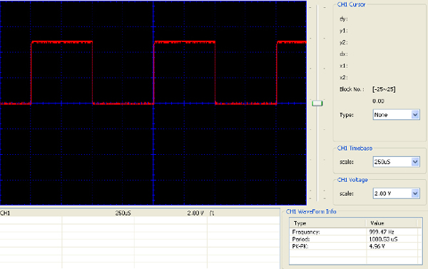
Figure 3-2 A timer-generated square wave
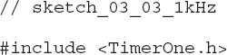
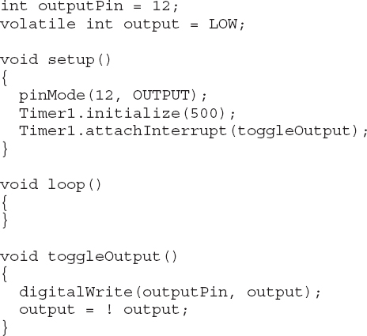
Although you could have written this using delay, by using a timer interrupt, you can do other things inside the loop. Also, if you used delay, then the frequency would not be as accurate because the actual time to set the output high would not be accounted for in the delay.
NOTE All the constraints on what you can do in the ISR for external interrupts also apply to timed interrupts.
You can set the timer interrupt period using this method to anything from 1 microsecond to 8,388,480 microseconds, or about 8.4 seconds. You do this by specifying a period in microseconds in the timer’s initialize function.
The TimerOne library also allows you to use the timer to generate PWM (Pulse Width Modulation) signals on Arduino pins 9 and 10. This may seem redundant, as you can do that with analogWrite anyway, but this method gives you better control of the PWM signal. In particular, it allows you to set the duty cycle between 0 and 1023 rather than the 0 to 255 of analogWrite. Also, the frequency of the PWM signal when using analogWrite is fixed at 500 Hz, whereas using TimerOne, you can specify the period for the timer.
To use the TimerOne library to generate PWM signals, use Timer1’s pwm function, as shown in the following code example:
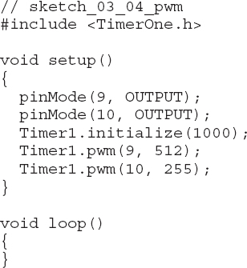
In this case, I have set the overall period to 1000 microseconds, resulting in a PWM frequency of 1kHz. Figure 3-3 shows the waveforms generated on pin 10 (top) and pin 9 (bottom).
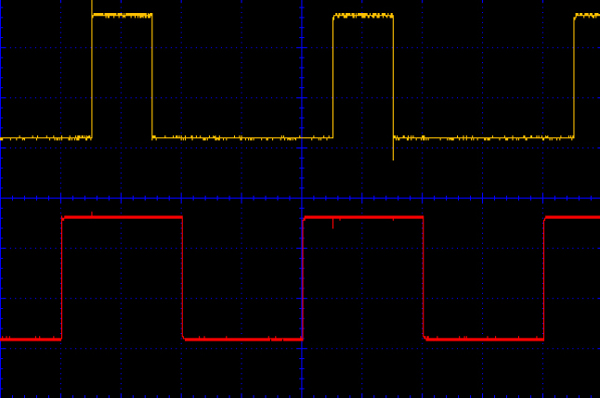
Figure 3-3 Using TimerOne to generate PWM at 1 kHz
As an experiment, let’s see how far you can push the PWM frequency. Changing the period to 10 results in a PWM frequency of 100 kHz. The waveforms for this are shown in Figure 3-4.
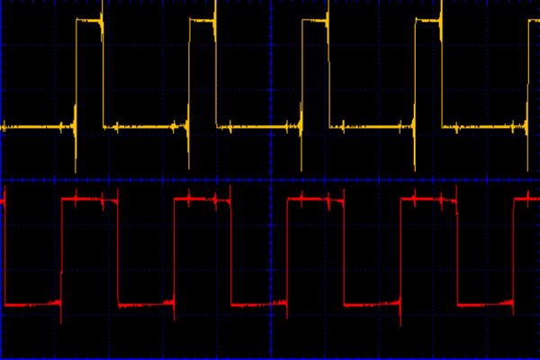
Figure 3-4 Using TimerOne to generate a 100-kHz PWM
Although there is, as you would expect, a fair amount of transient noise on the signals, you can see that the duty cycles still look pretty close to 25 percent and 50 percent, respectively.
Summary
Interrupts, although they sometimes seem like the ideal solution to a difficult project, can make the code difficult to debug and are by no means always the best way to handle tasks. Think carefully before you jump into using them. In Chapter 14, we’ll explore a different technique for getting around the Arduino’s apparent inability to do more than one thing at a time.
We will also return to interrupts in Chapter 5, where we’ll look at using them to save power by waking a sleeping Arduino periodically, and in Chapter 13, where we’ll use them for accurate timing during digital signal processing.
In the next chapter, we will be looking at squeezing maximum performance out of an Arduino.